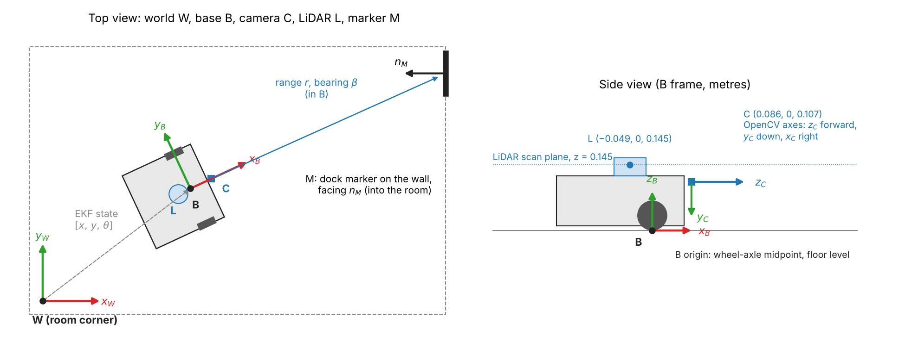
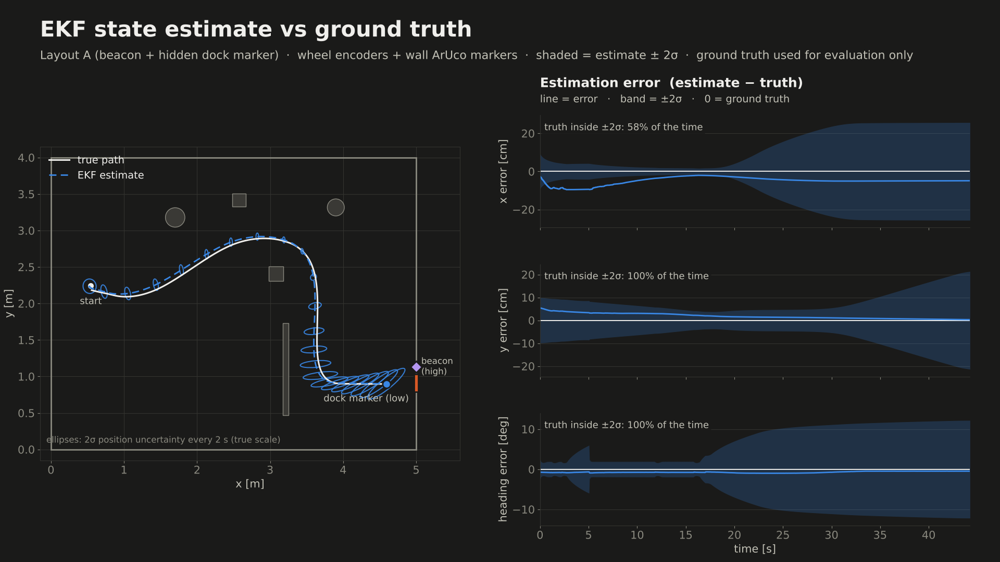
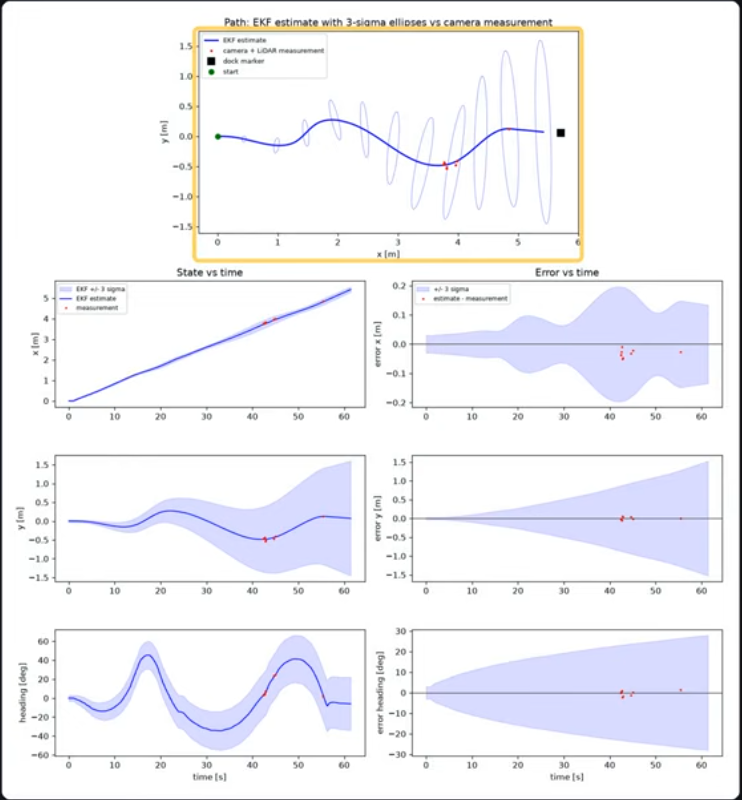

This project page describes our assessment 4 integrated project. The purpose of this project was to integrate sensing, estimation and control on both a simulated and hardware platform.
Our team used track A, a mobile robot (turtlebot) with visual waypoint navigation. We used a turtlebot3 with a 2D lidar and camera, simulated in MuJoCo. The task was to navigate a room and visually dock to an ARUCO marker. We have completed this task both in simulation and using a real robot, demonstrated in the attached videos.
Model:
The turtlebot is a differential drive system. The state-space model is simplified as the unicycle model, with inputs of linear velocity = v and angular velocity = w. The translation from the unicycle model to differential drive is seen with the controller calculating the angular velocities for each wheel using the track width and wheel radius.
Continuous-time linearised path-error model (A, B) at speed v. A = np.array([[0.0, v],[0.0, 0.0]]) B = np.array([[0.0],[1.0]])
The error dynamics are the cross-track error e_y, and the heading error e_th, relative to the planned path. z is used as integral action, accumulating lateral error over time to eliminate consistent tracking errors. The model is discretised for implementation in the simulation.
Discretised augmented with integral z model: Ad = [[1, vT, 0], [0, 1, 0], [T, 0, 1]], Bd = [[v T^2 / 2], [T], [0]].
Testing the controllability of the model while the robot has velocity demonstrates that the system is controllable with a result of rank = 3, matching the number of states in the model. However at 0 velocity the rank drops to 1 as a stationary robot can turn but cannot reduce lateral error.
Frames:

The world frame W has its origin at the room's corner (on the real robot, at its start pose), with x and y along the floor and z up. The base frame B sits at the midpoint of the wheel axle with x forward and y to the left; the EKF state [x, y, θ] is the pose of B in W. The camera C is 0.086 m ahead of B and 0.107 m up. It uses OpenCV axes (z forward along the optical axis, y down, x right), so ArUco poses from solvePnP are rotated into B before use. The LiDAR L is 0.049 m behind B and scans a horizontal plane 0.145 m above the floor. Each marker M has its own frame, with its normal nM pointing out of the wall into the room.
Sensing: LiDAR and camera:
The 2D LiDAR (360 beams, 0.12–3.5 m) is used for obstacle avoidance. Each scan is placed in the world frame using the EKF pose and added to a 5 cm log-odds occupancy grid. A beam's endpoint raises the chance that a cell is occupied, and the cells along the beam lower it, so the map can tolerate noise and clear an obstacle that has moved. The occupied cells are inflated by 0.30 m, about the robot's radius plus a safety margin. A* then plans the shortest collision free path through the grid, and the path is shortened to straight segments that the controller can follow. If a new scan shows an obstacle on the current path, the robot replans (at most once per second). If something comes within 0.25 m in front of it, the robot stops, and if it is stuck it backs up and replans. This is important as in preliminary testing we ran into issues where it would get itself stuck and not move out.
The forward Pi camera detects ArUco markers and uses solvePnP to find each marker's position relative to the robot. In the simulation, markers at known positions give range and bearing updates to the EKF. The camera also finds the dock by seeing a large beacon marker mounted high so that it can be seen over the low obstacles from the start and gives a rough target. Once the smaller dock marker below it is seen, the beacon is ignored, and the target is set from the dock marker only. The camera gives the dock's position well, but from far away its estimate of which way the marker faces is poor. Instead, a line is fitted to the LiDAR points on the wall around the marker, and the wall's normal gives the docking direction to about a degree. The target locks once the robot is close, so it approaches the dock straight and steady.
Estimator:
The estimator is an extended Kalman filter that tracks the robot’s pose (x, y, heading) from wheel-encoder odometry, with its covariance growing as the robot drives.
In the real-robot version it has no landmark updates, so the camera and LiDAR don’t correct it. Instead they locate the dock marker and the wall behind it, which sets the docking target.
We also use them to compute an odometry-free reference pose to check the filter against. In our runs the EKF ended within about 3 cm and 1° of that reference. Its uncertainty bands were much wider than the real error, so it is accurate but over-cautious.
Controller:
The robot is driven by the controller along the planner's path and docked at the charging station. It solely makes use of the robot's position estimate and EKF uncertainty. The simulator's ground truth is only utilised after the fact to assess each run's performance.
The controller measures the robot's sideways distance from the path and its heading deviation instead of tracking a target position. An LQR controller is created based on the concept of these faults as a linear state-space system, and integral action is incorporated to eliminate stable offsets over time, such as those brought on by a worn wheel. Additionally, the controller directs the robot through the path's bends, thus input is only required to fix mistakes.
A stopped robot cannot repair a sideways fault since it can only turn on the spot, according to the controllability analysis. As a result, any lateral fault is fixed while the robot is still moving, and it never completely stops before arriving at the dock.
After determining how much inaccuracy is acceptable for docking, the weights were adjusted by sweeping the control effort weighting and selecting the value that produced the best tracking for the least amount of steering. As the robot's behaviour changes with speed, the controller gains are recalculated across a range of speeds. The robot also slows down for tight curves and when the EKF is less certain of its position, it additionally finishes with a straight approach in front of the marker to ensure it arrives square to the dock.
Testing over 100 randomised trials showed the robot docked successfully every time. Most of the remaining tracking error came from the position estimate rather than the controller, as the same controller tracked much more closely when given the true position.
Lower-quality copy for playback on this page. For full quality, watch the same video on YouTube using the YouTube button at the top of the page.
| Component | Parameter | Value |
|---|---|---|
| Robot | Wheel radius / track width | 0.033 m / 0.288 m (sim), 0.287 m (real) |
| Max speed / turn rate | 0.26 m/s / 1.82 rad/s (real robot limited to 0.8 rad/s to reduce camera blur) | |
| Encoder resolution | 4096 ticks/rev | |
| Controller | Control period T | 0.05 s (20 Hz) |
| Cruise speed vnom | 0.20 m/s (sim), 0.10 m/s (real) | |
| Bryson limits ey / eθ / z / u | 0.05 m / 0.15 rad / 0.05 m·s / 0.60 rad/s | |
| Effort scale ρ | 5.0 (from the effort-weight sweep) | |
| Gain schedule | 15 speeds, from 0.03 m/s | |
| Lateral / longitudinal accel. limits | 0.25 / 0.30 m/s² | |
| Estimator | Camera noise assumed (R) | σr = 0.01 + 0.02·r m, σb = 1° |
| LiDAR navigation | Scan | 360 beams, 0.12–3.5 m, 5 Hz, σ = 1 cm (sim) |
| Grid cell / log-odds hit, free, clamp | 5 cm / +0.85, −0.40, ±4 | |
| Planning inflation (fallback) / robot radius | 0.30 m (0.24 m) / 0.22 m | |
| Safety stop / replan cooldown | 0.25 m within ±30° / 1 s | |
| Docking | Standoff / straight approach | 0.35 m / 0.70 m (sim), 0.30 m (real) |
| Markers (ArUco 4x4_50) | Sim: beacon id 6, 0.30 m, 0.72 m high; dock id 0, 0.15 m. Real: beacon id 3, 0.10 m; dock id 0, 0.15 m | |
| Target lock | ≥ 5 dock-marker sightings and within ~0.85 m |
Three randomised layouts (random start, dock position along the wall, beacon offset and low obstacles), real time.
| Layout | Dock marker first seen | Docked after | Docking error vs true dock | Collisions |
|---|---|---|---|---|
| A | 16 s | 44 s | 1.3 cm, 0.3° | 0 |
| B | 32 s | 46 s | 1.4 cm, 0.9° | 0 |
| C | 10 s | 27 s | 2.9 cm, 0.1° | 0 |
Three further beacon layouts also docked without collisions, 2.2–3.6 cm from the true dock, but took 52–81 s because of repeated replanning near the barrier. In an earlier version of the environment, where the dock position was given to the robot, it docked in 30 of 30 randomised layouts with a moving obstacle and in 19 of 20 static layouts.

Layout A. Left: true path, EKF estimate and 2σ position ellipses every 2 s (true scale). Right: estimation error with the ±2σ band. Ground truth is used for evaluation only.
| Layout | Truth inside ±2σ: x | y | heading | Max error x / y / heading |
|---|---|---|---|---|
| A | 58 % | 100 % | 100 % | 9.6 cm / 5.4 cm / 1.0° |
| B | 100 % | 100 % | 100 % | 3.8 cm / 3.0 cm / 1.6° |
| C | 56 % | 100 % | 100 % | 6.8 cm / 2.2 cm / 0.3° |

Real TurtleBot run (about 62 s, 5.5 m). Top: EKF path with 3σ ellipses, plus reference poses (red). Below: each state over time and estimate minus reference, with the ±3σ band.
The real robot has no ground truth, so the reference is a pose computed without odometry. When the dock marker is in view, the camera and LiDAR give the robot's position and heading relative to the known dock. This reference was only available near the dock (between 42 and 56 s), which gave 8 comparison points.
| x | y | heading | |
|---|---|---|---|
| Estimate − reference (range) | −5 to −1 cm | within ±3 cm | within ±2° |
| 3σ bound at the end of the run | ±0.14 m | ±1.5 m | ±28° |
| Reference inside 3σ | 8 / 8 | 8 / 8 | 8 / 8 |
The estimate stayed within a few centimetres and degrees of the reference, but the uncertainty grew steadily because the encoder process noise Q is set conservatively and the run had few marker updates. So the hardware filter is consistent, but over cautious: in y it is about 50 times wider than the actual error. The real robot docked successfully.
Requires Python 3.10+ with mujoco, numpy, scipy,
matplotlib and opencv-contrib-python installed.
git clone https://github.com/amyritsinias-oss/SensorsAndControlIP.git
cd SensorsAndControlIP/integrated_project
python models/build_scene.py # first time only: builds the MuJoCo scene
python run_track.py # runs the simulation in the MuJoCo viewerEach run uses a new random layout, start pose and dock position.
Optional flags: --seed N repeats a layout, --beacon uses the high beacon marker
with low obstacles, --no-viewer runs without the window.
On macOS, use mjpython instead of python.
Dominik Raffoul: Developed the path-following and docking controller which encompasses its design, tuning, gain scheduling and evaluation. Assisted Amy on part A through working on the path-error state-space model and controllability analysis. In addition, constructed the inital MuJoCo scene for the simulation and have also contributed to the github project page.
Max Bakulic: Created the lidar and obstacle detection/navigation component with the aid of an occupancy grid. Helped tune the simulation camera and docking sequence. Created the simulation video and graphs for the final video submission, which included multiple side by side runs, with ekf vs ground truth graphs to analyse.
Amy Ritsinias: Collaborated with Dominik on part A. Helped Elan set up the hardware turtlebot and commenced early testing in the mechatronics lab for the real run. Set up the github and initial project page layout. Created moving obstacles in the sim which ended up being out of required scope.
Elan Sami Aboud: I ported the group’s simulation pipeline to the real TurtleBot, connecting its LiDAR, camera and encoders to the planner and controller. I added the beacon and dock ArUco detection, then tuned and debugged it on the robot. EKF: I ran the EKF on the robot’s wheel odometry and evaluated it against an independent camera and LiDAR reference pose, with 3-sigma uncertainty bands.
Codex was used to help fix bugs and issues when we got stuck, and quick troubleshooting during the physical testing. Helped explain the issue and let us understand how to fix it. Claude was also utilised to help format this page via html (in particular making the tables and headings), as none of us are strong in this skillset